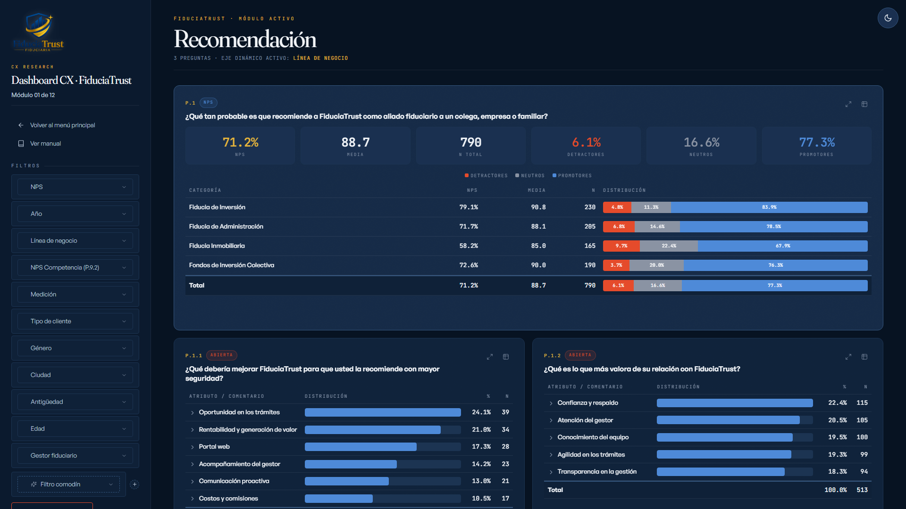

Demo · CXEstudio CX Relacional — FiduciaTrust
Estudio de experiencia de cliente para una fiduciaria (empresa y datos ficticios). Mediante un pipeline en Python calculo NPS, CSAT y voz del cliente, y construyo un dashboard web interactivo autocontenido y un informe ejecutivo de 73 láminas con análisis y recomendaciones.